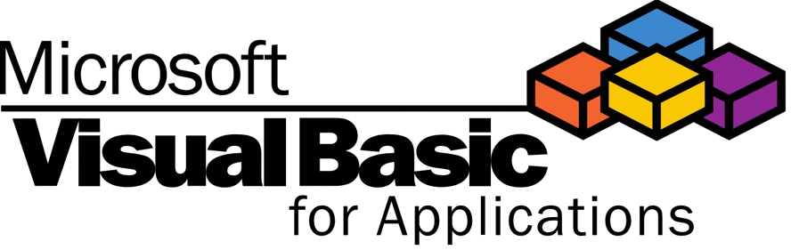

Expérience
De l'application à l'infrastructure
Des missions concrètes, en conditions réelles, avec rigueur et autonomie.
DevSecOpsAutomatisationSupport IT
Mon expérience
Ingénieur DevSecOps · Spherea
- Maintien et amélioration de pipelines CI/CD GitLab
- Conteneurisation et déploiement d'applications avec Docker
- Supervision de services et suivi des vulnérabilités sur des systèmes Linux
Chatbot GLPI · Mairie de Fontenay-aux-Roses
- Chatbot JavaScript intégré à GLPI pour automatiser la gestion des tickets IT
- Création automatique de tickets et prise en charge d'environ 10 % des demandes récurrentes
- Base de connaissances évolutive, déployée en conditions réelles
Outil de gestion de tâches · Mairie de Fontenay-aux-Roses
- Outil de type Trello sous Excel (VBA) avec interfaces interactives pour utilisateurs non techniques
- Synchronisation automatique du suivi des tâches entre services
- Adopté par environ 10 services
